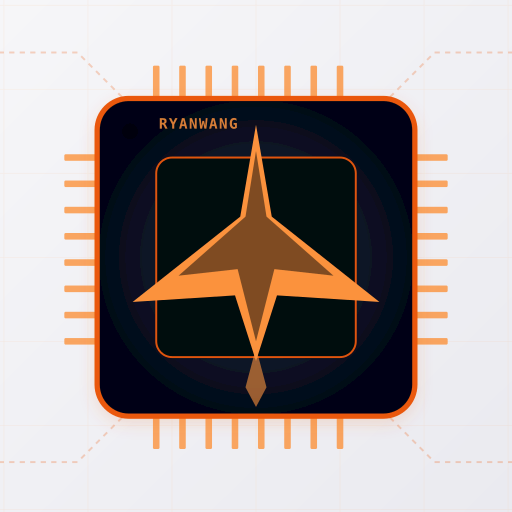

MCUPILOT计算机本地系统卷
#include "hil_config_user.h"
#include "hil_inject.h"
int main(void) {
// ... 硬件初始化 ...
HIL_InjectConfig_t cfg = {
.buf_a = HIL_CFG_A,
.buf_b = HIL_CFG_B,
.buf_size = HIL_CFG_SIZE,
.p_version = HIL_P_VER,
.p_active_idx = HIL_P_IDX,
};
HIL_Inject_Init(&cfg);
for (;;) {
HIL_Inject_Task();
// ... 业务代码 ...
}
}